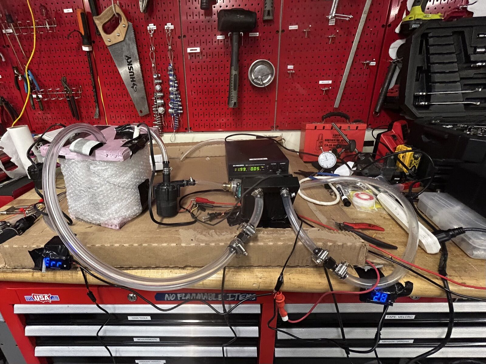
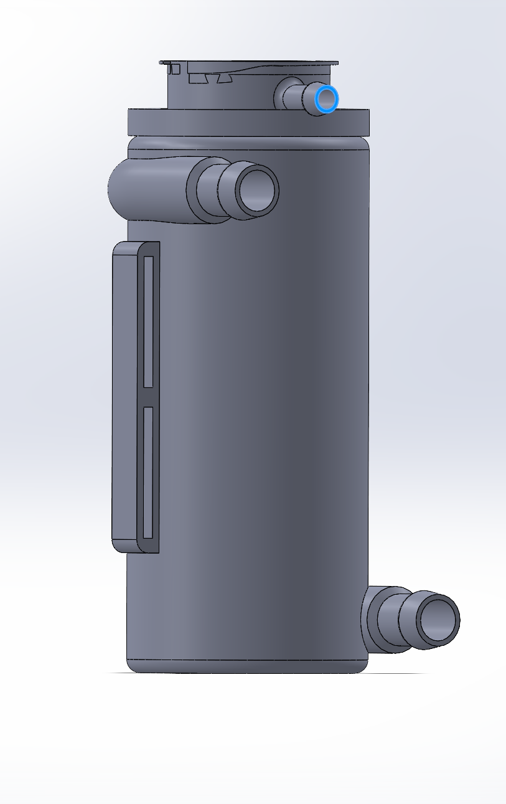
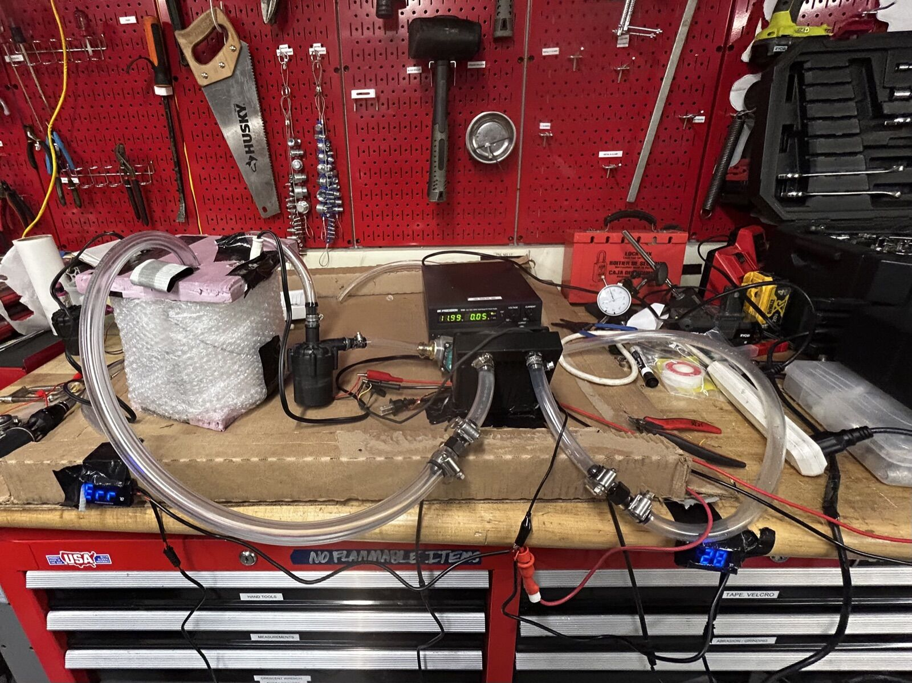
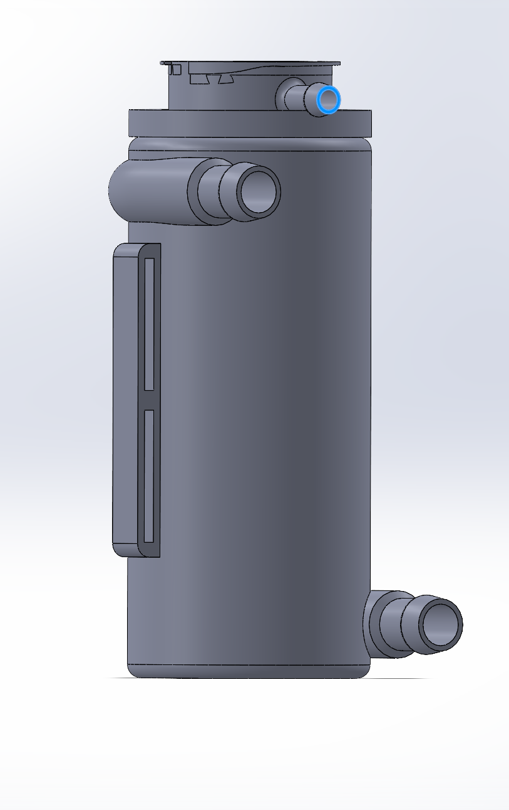
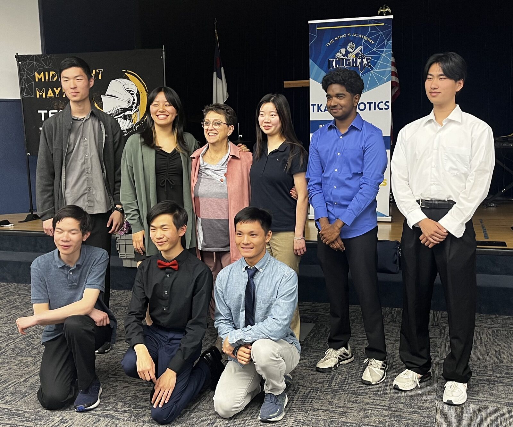
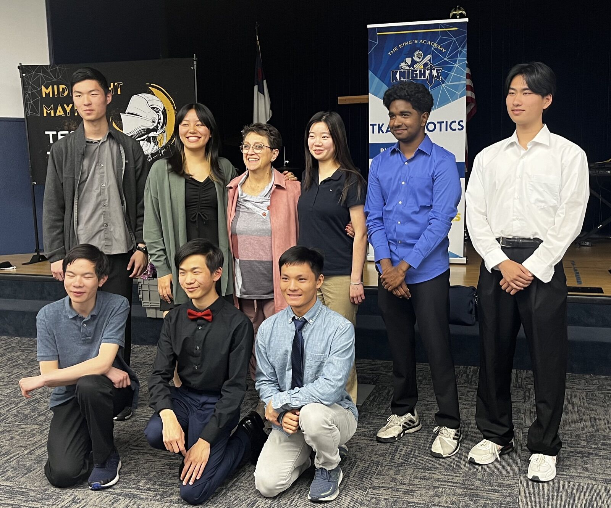

Electric Motor Cooling System
Powertrain thermal management · Northeastern Electric Racing (2025–Present)
Overview
Supporting powertrain thermal management for Northeastern Electric Racing's electric vehicle by designing and testing liquid cooling components for electric motors.
What I Did
- Tested and validated liquid cooling systems for electric motors, including pumps, radiators, and coolant flow paths
- Conducted water heating and cooling experiments under varying thermal loads
- Analyzed radiator heat dissipation efficiency by measuring cooling rates to assess thermal effectiveness
- Applied thermodynamics and heat transfer principles to interpret test results and support design decisions
- Designed a swirl pot in CAD, optimizing it for coolant flow and air separation, and prepared the component for SLA 3D printing
- Collaborated with the powertrain team to integrate cooling components within overall vehicle packaging constraints
 
